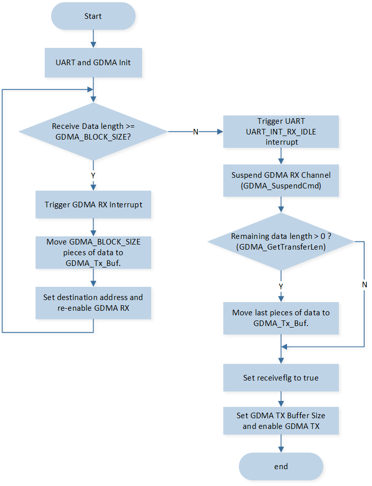

Arbitrary Length Transmit and Receive - GDMA
该示例使用 UART 和 GDMA 与 PC 终端进行任意长度数据通信。
SoC 使用 GDMA 接收 PC 终端输入的数据，GDMA 将数据从 UART RX FIFO 外设传输到 Memory。同时在 UART_FLAG_RX_IDLE 中断中获取任意长度数据长度、处理数据、置位 received_flag。
一旦 received_flag 被设置 ，SoC 使用 GDMA 将收到的数据从 Memory 传输到 UART TX FIFO 外设，发送回 PC 终端。
在该示例中，PC 终端发送任意长度的数据，都将会收到 SoC 回复相同的数据信息。
用户可以通过不同的宏配置改变示例中的引脚配置，GDMA 配置等信息，具体宏配置详见 配置选项。
环境需求
该示例的环境需求，可参考 环境需求。
此外，需要在 PC 终端安装 PuTTY 或 UartAssist 等串口助手工具。
配置选项
可配置如下宏修改 GDMA 通道设置。
// Set the following macros to modify the UART TX GDMA Channel configurations. #define UART_TX_GDMA_CHANNEL_NUM GDMA_CH_NUM3 #define UART_TX_GDMA_CHANNEL GDMA_Channel3 #define UART_TX_GDMA_CHANNEL_IRQN GDMA_Channel3_IRQn #define UART_TX_GDMA_Handler GDMA_Channel3_Handler // Set the following macros to modify the UART RX GDMA Channel configurations. #define UART_RX_GDMA_CHANNEL_NUM GDMA_CH_NUM4 #define UART_RX_GDMA_CHANNEL GDMA_Channel4 #define UART_RX_GDMA_CHANNEL_IRQN GDMA_Channel4_IRQn #define UART_RX_GDMA_Handler GDMA_Channel4_Handler
可配置如下宏修改引脚定义。
#define UART_TX_PIN P3_0 #define UART_RX_PIN P3_1
可配置如下宏修改 GDMA RX 通道的 Block Size。
#define GDMA_BLOCK_SIZE 5
硬件连线
连接 P3_0（UART TX Pin）和 FT232 的 RX，P3_1（UART RX Pin） 和 FT232 的 TX。
编译和下载
该示例的编译和下载流程，可参考 编译和下载。
测试验证
准备阶段
启动 PuTTY 或 UartAssist 等 PC 终端，连接到使用的 COM 端口，并进行以下 UART 设置：
波特率: 115200
8 数据位
1 停止位
无校验
无硬件流控
测试阶段
当 EVB 启动后，在 Debug Analyzer 工具内观察如下 log。
Start uart tx rx unfixedlen by gdma test!
在 PC 终端上输入字符串，并观察 PC 终端上是否出现相同的字符串。同时在 Debug Analyzer 工具上会显示接收到的数据和中断信息。假设 PC terminal 输入数据长度为 number，当 number 处于不同 case 时打印中断 log 情况如下：
GDMA0_Channel4_Handler /* time = (number / block_size) > 0 triggers time interrupts and print logs. */ UART_FLAG_RX_IDLE /* time = (number % block_size) > 0 and meeting the UART_FLAG_RX_IDLE interrupt condition triggers time interrupts and print logs. */ value is 0x.. value is 0x.. value is 0x.. ... UART_TX_GDMA_Handler /* Once received_flag is set, the SoC uses GDMA to send number length data back to the PC terminal. Upon completion, it triggers the interrupt and prints logs. */
代码介绍
该章节主要介绍示例中的初始化和相应功能实现的代码和流程说明。
源码路径
工程文件和源码路径如下：
工程路径:
sdk\samples\peripheral\uart\unfixedlen_gdma\proj源码路径:
sdk\samples\peripheral\uart\unfixedlen_gdma\src
初始化
外设的初始化流程可参考 General Introduction 中的 初始化流程 部分。
调用
Pad_Config()与Pinmux_Config()，配置对应引脚的 PAD 和 PINMUX。void board_uart_init(void) { Pad_Config(UART_TX_PIN, PAD_PINMUX_MODE, PAD_IS_PWRON, PAD_PULL_UP, PAD_OUT_DISABLE, PAD_OUT_HIGH); Pad_Config(UART_RX_PIN, PAD_PINMUX_MODE, PAD_IS_PWRON, PAD_PULL_UP, PAD_OUT_DISABLE, PAD_OUT_HIGH); Pinmux_Config(UART_TX_PIN, UART3_TX); Pinmux_Config(UART_RX_PIN, UART3_RX); }
调用
RCC_PeriphClockCmd()，开启 UART 时钟。对 UART 外设进行初始化：
定义
UART_InitTypeDef类型UART_InitStruct，调用UART_StructInit()将UART_InitStruct预填默认值。根据需求修改
UART_InitStruct参数，UART 的初始化参数配置如下表。调用
UART_Init()，初始化 UART 外设。
UART Hardware Parameters |
Setting in the |
UART |
|---|---|---|
UART Baudrate Parameter - div |
|
|
UART Baudrate Parameter - ovsr |
|
|
UART Baudrate Parameter - ovsr_adj |
|
|
GDMA Enable |
||
TX GDMA Enable |
||
RX GDMA Enable |
||
TX Waterlevel |
1 |
|
RX Waterlevel |
1 |
配置 UART 接收空闲中断
UART_INT_RX_IDLE和线状态中断UART_INT_LINE_STS，配置 NVIC。NVIC 相关配置可参考 中断配置。对 GDMA 外设进行初始化：
定义
GDMA_InitTypeDef类型GDMA_InitStruct，调用GDMA_StructInit()将GDMA_InitStruct预填默认值。根据需求修改
GDMA_InitStruct参数。GDMA TX 和 RX 通道的初始化参数配置如下表。调用GDMA_Init()，初始化 GDMA 外设。配置 GDMA 总传输完成中断
GDMA_INT_Transfer和 NVIC，NVIC 相关配置可参考 中断配置。调用
GDMA_Cmd()使能 GDMA RX 通道传输。
GDMA Hardware Parameters |
Setting in the |
GDMA TX Channel |
GDMA RX Channel |
|---|---|---|---|
Channel Num |
3 |
4 |
|
Transfer Direction |
|||
Buffer Size |
- |
|
|
Source Address Increment or Decrement |
|||
Destination Address Increment or Decrement |
|||
Source Data Size |
|||
Destination Data Size |
|||
Source Burst Transaction Length |
|||
Destination Burst Transaction Length |
|||
Source Address |
|
|
|
Destination Address |
|
|
|
Source Handshake |
- |
||
Destination Handshake |
- |
功能实现
UART 通过 GDMA 收发任意长度数据的流程如图所示：
{kind=link}

UART GDMA 收发任意长度数据流程
使能 GDMA RX 通道传输后，当在 PC 终端输入字符时，GDMA RX 通道将数据从 (&(UART_DEMO->UART_RBR_THR)) 搬到 GDMA_Rx_Buf 。
假设 PC 终端上的输入数据长度为 number, 对于不同情况的中断如下：
如果 number /
GDMA_BLOCK_SIZE> 0，即 UART 接收到的数据长度大于GDMA_BLOCK_SIZE，则每接收GDMA_BLOCK_SIZE个数据都会触发 GDMA RX 中断，一共会触发 number / block_size 次。在 GDMA 中断内将接收到的数据保存到GDMA_Tx_Buf中，并重新使能 GDMA RX 通道以便后续继续接收。void GDMA0_Channel4_Handler(void) { DBG_DIRECT("GDMA0_Channel4_Handler"); /* Clear interrupt */ GDMA_Cmd(UART_RX_GDMA_CHANNEL_NUM, DISABLE); GDMA_ClearAllTypeINT(UART_RX_GDMA_CHANNEL_NUM); receive_offset += GDMA_BLOCK_SIZE; count += 1; ... memcpy(GDMA_Tx_Buf + GDMA_BLOCK_SIZE * (count - 1), GDMA_Rx_Buf, GDMA_BLOCK_SIZE); GDMA_ClearINTPendingBit(UART_RX_GDMA_CHANNEL_NUM, GDMA_INT_Transfer); /* reset gdma param */ GDMA_SetDestinationAddress(UART_RX_GDMA_CHANNEL, (uint32_t)GDMA_Rx_Buf); GDMA_Cmd(UART_RX_GDMA_CHANNEL_NUM, ENABLE); }
如果 number /
GDMA_BLOCK_SIZE= 0 时，由于传输数据量不足，不会触发 GDMA RX 中断。当搬运完 UART RX FIFO 中的所有数据后，在空闲超时时间内没有数据放入 RX FIFO，则会触发UART_INT_RX_IDLE中断。暂停
UART_RX_GDMA_CHANNEL通道传输，关闭UART_INT_RX_IDLE中断。获取本次 GDMA 的传输数据量，并将接收到的数据保存到
GDMA_Tx_Buf中。记录已经接收到的数据长度
receive_offset，并设置receiveflg为true，表示数据接收完成。重新初始化 GDMA RX 通道，清空 UART FIFO 并再次使能
UART_INT_RX_IDLE中断，用于接收下一轮的数据传输。
void UART3_Handler(void) { ... if (UART_GetFlagState(UART3, UART_FLAG_RX_IDLE) == SET) { /* Suspend GDMA_Channel2 */ GDMA_SuspendCmd(UART_RX_GDMA_CHANNEL, ENABLE); UART_INTConfig(UART3, UART_INT_RX_IDLE, DISABLE); data_len = GDMA_GetTransferLen(UART_RX_GDMA_CHANNEL); ... if (data_len) { receive_offset += data_len; memcpy(GDMA_Tx_Buf + GDMA_BLOCK_SIZE * count, GDMA_Rx_Buf, data_len); ... GDMA_Cmd(UART_RX_GDMA_CHANNEL_NUM, DISABLE); GDMA_SuspendCmd(UART_RX_GDMA_CHANNEL, DISABLE); driver_gdma4_init(); /* GDMA TX flag */ receiveflg = true; } /* Run here if data length = N * GDMA_BLOCK_SIZE, */ else { GDMA_SuspendCmd(UART_RX_GDMA_CHANNEL, DISABLE); receiveflg = true; } UART_ClearRxFIFO(UART3); UART_INTConfig(UART3, UART_INT_RX_IDLE, ENABLE); } ... }
一旦
received_flag被置为true， 调用GDMA_SetBufferSize()更新 GDMA TX Block Size， 调用GDMA_Cmd()，使能 GDMA TX 通道传输，DMA将数据从GDMA_Tx_Buf传输到 UART TX FIFO 中。while (1) { if (receiveflg) { GDMA_SetBufferSize(UART_TX_GDMA_CHANNEL, receive_offset); GDMA_Cmd(UART_TX_GDMA_CHANNEL_NUM, ENABLE); ... } }
GDMA TX 传输完成后，会触发
GDMA_INT_Transfer中断。UART 发送数据完成后，在 PC 终端上可以看到信息。
See Also
相关 API Reference 请查看：